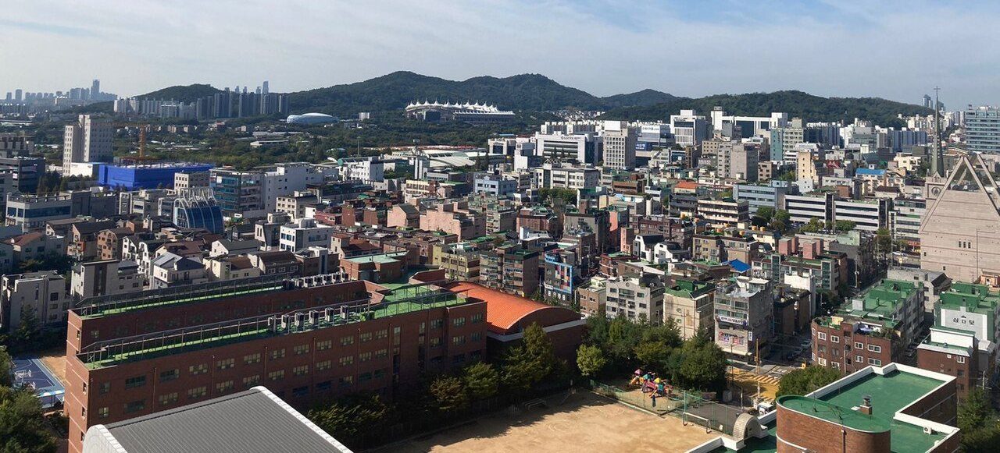
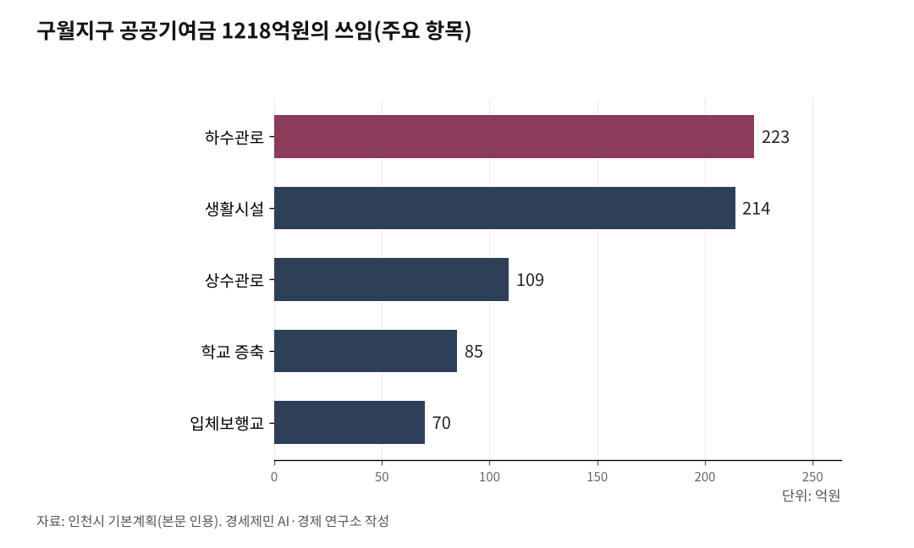

구월지구 B1구역, 인천에서 가장 높은 용적률 430% 받았다
관교동 일대 14만3839㎡, 아파트 단지 아닌 상업·업무 복합 개발
기준용적률 430%, 연수·선학 287.3%보다 142.7%포인트 높아
공공기여금 1218억원 쓸 곳 이미 정해져, 하수관로에만 223억원

인천시가 25일 노후계획도시 정비 선도지구 여섯 구역을 확정했다. 구월지구 B1구역이 2756호로 이름을 올렸다. 동의율 87.5%, 평가점수 88.2점이다.
숫자 하나가 이 구역의 성격을 말한다. 기준용적률 430%다. 인천 노후계획도시 다섯 지구를 통틀어 가장 높다. 값이 높은 만큼 조건도 다르다. B1구역은 아파트만 짓는 구역이 아니다.
주택단지정비형이 아니라 중심지구정비형이다
인천시는 2035 노후계획도시정비 기본계획에서 구월지구 124만㎡에 특별정비예정구역 둘을 뒀다. 주택단지정비형 A1구역 4만4249㎡와 중심지구정비형 B1구역 14만3839㎡다. 붙은 것은 B1이다.
중심지구정비형은 주거만 다루지 않는다. 인천터미널역과 예술회관역 역세권을 복합거점으로 개발해 상업과 업무 기능을 강화하는 구역이다. 기준용적률도 갈린다. 주택단지정비형 310%, 중심지구정비형 430%로 120%포인트 차이다.
시가 그린 그림은 문화예술도시다. 소호(SOHO, 소규모 사무실 겸 주택) 개념을 들여 창작자와 소상공인이 일할 공간을 만들고 문화와 관광과 창의산업을 묶겠다는 구상이다.
값이 높으면 조건이 붙는다. B1구역은 상업·업무공간 2500㎡를 기부채납해야 한다. A1구역이 공원 5159㎡를 내놓는 것과 성격이 다르다. 주민이 맞이할 것은 아파트 재건축이 아니라 주거와 상업이 섞인 복합 개발이다.

430%가 어디서 오나
구월지구 기준용적률은 408.4%다. 연수·선학 287.3%, 만수1·2·3 322.2%, 갈산·부평·부개 373.1%, 계산 376.8%를 모두 웃돈다.
높은 값에는 근거가 있다. 구월지구는 상업·업무용지와 공공청사를 합한 비율이 10.1%로 자족 기능을 이미 갖췄다. 분당 9.2%, 일산 8.4%, 산본 6.6%보다 높다.
공공기여율은 두 구간으로 갈린다. 기준용적률 이하는 10%, 넘는 몫은 초과분의 41%다. 기준용적률이 높을수록 싼 구간이 길어진다. 구월지구가 유리한 대목이 여기다.
특례도 붙는다. 용적률은 도시계획 기준의 최대 1.5배까지 완화되고 건폐율은 70%까지 허용된다. 안전진단은 면제하거나 완화한다.
1218억원은 쓸 곳이 정해졌다
구월지구에서 걷을 공공기여금은 1453억원이다. 현물대납 235억원을 뺀 1218억원이 기반시설로 들어간다. 주민이 내놓는 돈이므로 쓰임새가 곧 돌려받는 것이다.
가장 큰 몫은 하수관로 223억원, 상수관로 109억원이다. 둘을 합치면 332억원으로 전체의 27%다. 돈은 땅 밑으로 먼저 간다.
생활시설에 214억원을 써 주차장과 사회복지시설, 노인복지시설을 1개소씩 짓는다. 학교 증축 85억원으로 중학교 10학급을 늘리고, 역세권과 중앙공원을 잇는 입체보행교에 70억원을 쓴다.
목록에 없는 것이 눈에 띈다. 공원이다. 구월지구 공원·녹지는 지구 면적의 11.3%로 일산 23.5%, 분당 19.4%, 산본 15.4%보다 낮다. 인천시도 기본계획에서 추가 확보가 필요하다고 적었다. 그런데 배분표에 공원 항목은 없다.
계획 인구의 두 배가 사는 땅에 다시 채운다
구월지구는 주택 200만호 공급 시대의 산물이다. 1985년 7월 택지지구로 지정돼 1990년 10월 동아아파트 입주로 시작했고 1994년 3월 끝났다.
계획 인구는 1만명이었다. 지금은 1만8972명이 산다. 계획 대비 189.7%다. 세대수도 5938세대에서 9045세대로 늘었다. 주차난과 기반시설 노후화가 그 결과다.
인천시는 2035년까지 이곳을 2만7982명, 1만2864세대로 잡았다. 9010명이 더 들어온다. 계획의 두 배를 이미 넘긴 땅에 사람을 더 채우는 셈이다.
물량도 배정을 넘겼다. 구월지구는 2700호 배정에 2756호가, 지구 전체는 1만5600호 배정에 1만6267호가 붙었다. 신청은 39개 예정구역 가운데 21개, 4만6100호였다. 넷 가운데 하나가 붙은 셈이다.
아직 정해지지 않은 것
정비용적률이 나오지 않았다. 430%는 출발점이고 여기에 얼마를 더 얹느냐가 분담금을 가른다. 그 몫에는 41%짜리 공공기여가 붙는다.
다음 갈림길은 사업 방식이다. 주민대표단을 꾸린 뒤 조합 시행과 공공시행자와 신탁업자 가운데 하나를 골라야 한다. 셋은 비용과 속도와 주민 통제력이 다르고, 여기서 정한 것이 사업 끝까지 간다. 인천일보는 전체 기간을 10년 안팎으로 봤다.
단지별 현황용적률과 대지지분도 공개되지 않았다. 인천일보는 25일 선도지구 여섯 구역이 적게는 두 개, 많게는 일곱 개 단지로 이뤄져 대지지분이 달라 사업비 분담에서 이해가 엇갈릴 수 있다고 짚었다. 인천시 담당 인력이 모자란다는 김우성 시의원(더불어민주당·연수구2) 발언도 실었다.
이주 대책도 없다. B1구역 2756세대에 다섯 구역 1만3511세대가 겹치면 인천 임대차 시장이 흔들린다. 인천시는 총괄계획가(Master Planner)를 보내 특별정비계획 수립을 돕겠다고 했으나 규모와 시기는 밝히지 않았다.
권리산정 기준일은 25일자로 고시됐다. 이날 뒤에 지분을 쪼개 산 사람은 새 집을 받지 못한다. 지금 살고 있는 사람을 보호하는 장치다.
주민이 오늘 확인할 수 있는 것은 둘이다. 건축물대장에 단지 현황용적률이 있고 등기부등본에 대지지분이 있다. 430%가 내 몫으로 얼마가 되는지는 그 두 값에서 시작한다.
※ 이 기사는 AI 프로그램 클로드5를 활용해 작성했습니다.
참고문헌
이종선·인투아이(INTO-AI), 「인천 노후계획도시 선도지구 6곳 1만6267호 선정 전국 최대」,
인천투데이, 2026년 8월 25일 11시 25분.
https://www.incheontoday.com/news/articleView.html?idxno=322673
이종선·인투아이(INTO-AI), 「[노후계획도시-구월] 문화예술도시로 재탄생 복합 정주단지 탈바꿈」,
인천투데이, 2026년 2월 8일 13시 입력, 2월 24일 9시 23분 수정.
https://www.incheontoday.com/news/articleView.html?idxno=315068
변성원, 「인천 노후계획도시 선도지구 6개 구역 확정…단일 지자체 최대 물량」,
인천일보, 2026년 8월 25일 20시 6분 입력, 1면.
https://www.incheonilbo.com/news/articleView.html?idxno=1330412
변성원, 「'단지별 갈등 조정'…인천형 노후계획도시 성패 가른다」,
인천일보, 2026년 8월 25일 20시 6분 입력, 3면.
https://www.incheonilbo.com/news/articleView.html?idxno=1330417
이광수, 「인천시, 전국 최대 규모 노후계획도시 선도지구 6곳 확정」,
비즈니스코리아, 2026년 8월 25일 12시 19분.
https://www.businesskorea.co.kr/news/articleView.html?idxno=275459
2035 인천광역시 노후계획도시정비기본계획, 인천광역시.
구월지구 기준용적률과 공공기여금 배분, 특별정비예정구역 지정, 자족기능과 공원녹지 비율의 원출처다.
위 인천투데이 2026년 2월 8일자 기획기사가 이 계획을 분석해 보도했다.
노후계획도시 정비 및 지원에 관한 특별법 제39조(권리산정 기준일). 법령 정식 명칭이다
사진 출처
· [대표사진] Narubaru7, "인천 남동구 전경.jpg", 위키미디어 공용, CC0, https://commons.wikimedia.org/wiki/File:%EC%9D%B8%EC%B2%9C_%EB%82%A8%EB%8F%99%EA%B5%AC_%EC%A0%84%EA%B2%BD.jpg
© 경세제민 AI·경제 연구소. 인용할 때는 출처를 밝혀 주십시오.